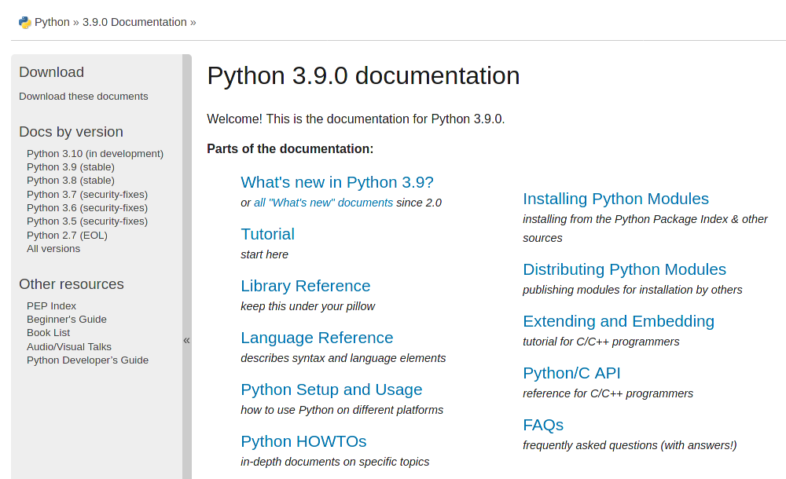

Podman básico: Contenedor con documentación de Python
Primer ejercicio para probar Podman donde se crea un contenedor, se copia y desempaca la documentación de Python y se levanta un servidor web para consultarla.
09 October 2020
Bienvenido a la serie de apuntes sobre Podman que espero sea de ayuda para aprender y utilizar el uso de contenedores impulsado por RedHat.
Crear un directorio para este ejercicio
$ mkdir podman-01-documentacion-python
$ cd podman-01-documentacion-python
Visite Download Python 3 Documentation y descargue el archivo comprimido que tiene todos los archivos HTML empacados en .tar.bz2. Al momento de escribir esto se encuentra la versión 3.9.0
$ wget https://docs.python.org/3/archives/python-3.9.0-docs-html.tar.bz2
Crear el archivo Dockerfile
$ nano Dockerfile
Con este contenido...
FROM python:3.9-alpine
# Crear directorio
RUN mkdir /app
WORKDIR /app
# Copiar la documentación
COPY python-3.9.0-docs-html.tar.bz2 .
# Desempacar
RUN tar -xjf python-3.9.0-docs-html.tar.bz2 && \
ln -s python-3.9.0-docs-html python3
# Arrancar el servidor web
CMD python -m http.server 8000
Descargar la imagen python:3.9-alpine
$ podman pull python:3.9-alpine
$ podman images
Construir una imagen con nombre python_docs en su versión 3.9.0
$ podman build -t python_docs:3.9.0 .
Correr el contenedor, que se autodestruya, mandar al fondo, canalizar el puerto 8000 y con nombre python_docs_web
$ podman run --rm -d -p 8000:8000 --name python_docs_web python_docs:3.9.0
Probar el navegador de internet con esta URL
http://127.0.0.1:8000/python3/

Terminar la ejecución del contenedor con...
$ podman stop python_docs_web
Navegue por la serie de apuntes de Podman
- Contenedor con documentación de Python
- Contenedor con explorador de archivos web en PHP
- Pod con MySQL y PhpMyAdmin